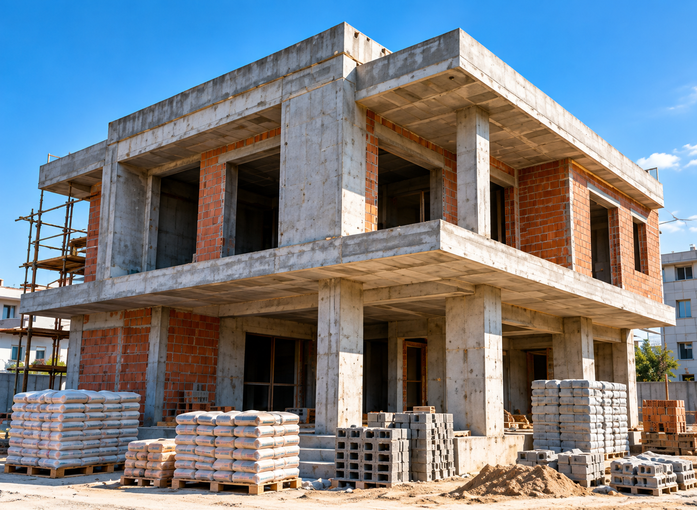
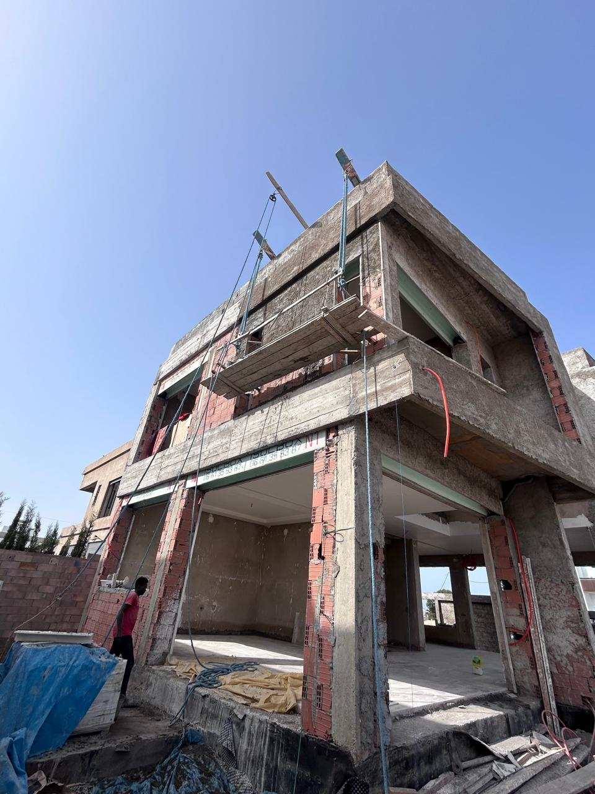
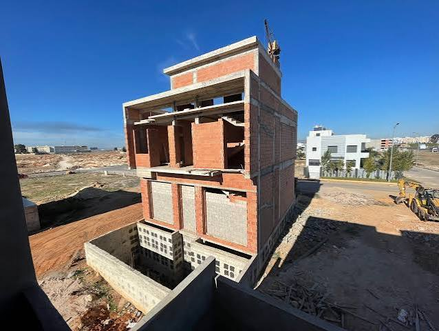
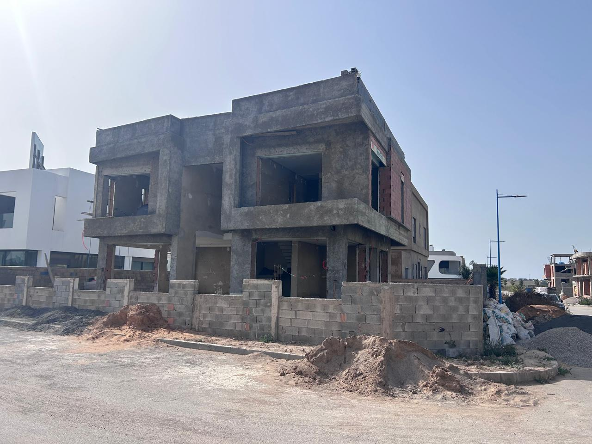
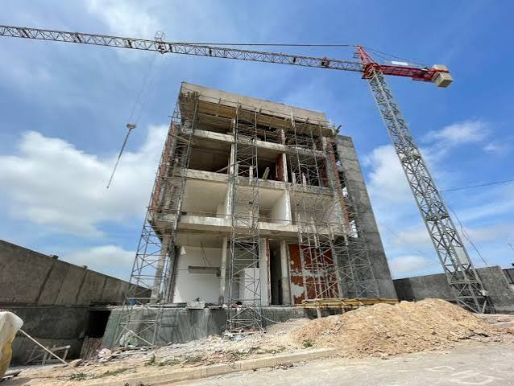

Travaux de construction
Réalisation de différents travaux liés aux projets de construction.
Des solutions de construction adaptées aux exigences de chaque projet.
Découvrir nos réalisations →COMIT TRAVAUX intervient dans différents projets de construction, en accompagnant ses clients dans la réalisation de leurs travaux avec une approche basée sur la qualité, la rigueur et le respect des exigences du projet.
Notre expérience nous permet d’intervenir aussi bien sur des travaux de proximité que sur des projets d’envergure et de grands marchés, en collaboration avec différents intervenants du chantier.

Des interventions adaptées aux besoins et aux exigences de chaque projet.
Réalisation de différents travaux liés aux projets de construction.
Interventions liées aux différentes étapes du gros œuvre.
Travaux de construction et d’aménagement adaptés aux projets.
Travaux d’amélioration, de rénovation et de réhabilitation des espaces existants.
Solutions d’aménagement adaptées à la configuration et aux besoins du projet.
Interventions techniques nécessaires au bon déroulement des travaux.
De la préparation du chantier à la réalisation des travaux, COMIT TRAVAUX veille à assurer une organisation efficace et un suivi rigoureux des différentes étapes du projet.
Analyse des besoins et faisabilité
Planification des travaux et moyens
Exécution sur site dans les règles de l’art
Suivi qualité à chaque étape
Un chantier livré dans les délais
Découvrez quelques-unes de nos réalisations et projets réalisés dans le domaine de la construction.




Une expérience acquise à travers différents projets et environnements de travail.
Une attention portée à la qualité d’exécution et aux exigences du projet.
Une organisation adaptée aux besoins de chaque chantier.
Un accompagnement basé sur le sérieux et le respect des engagements.
Présentez-nous votre projet et notre équipe vous accompagne dans l’étude de vos besoins.
Demander un devis →